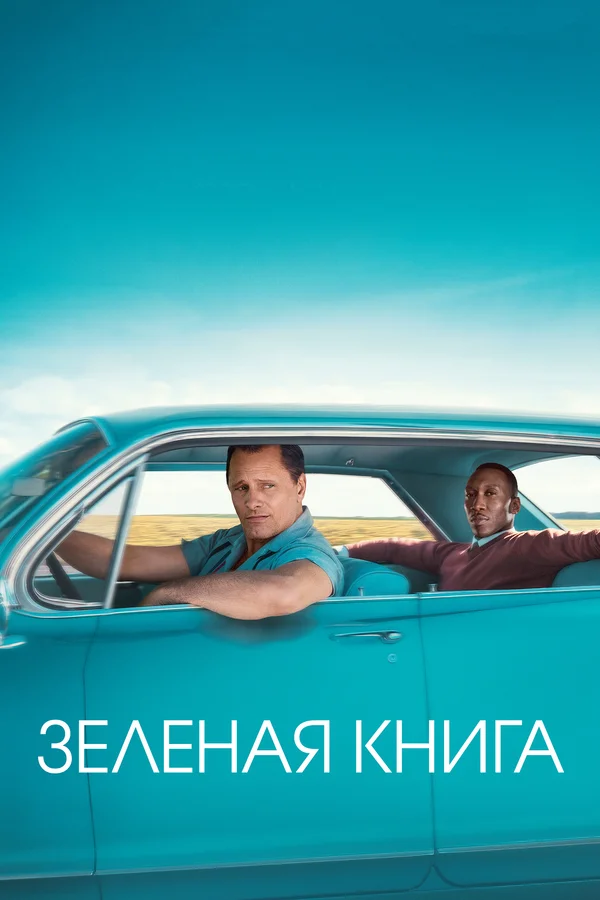
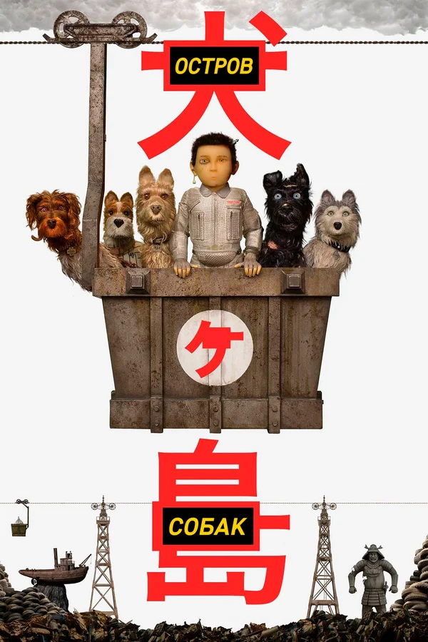
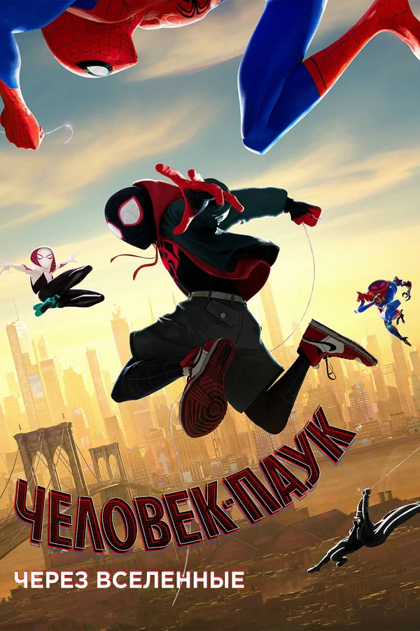
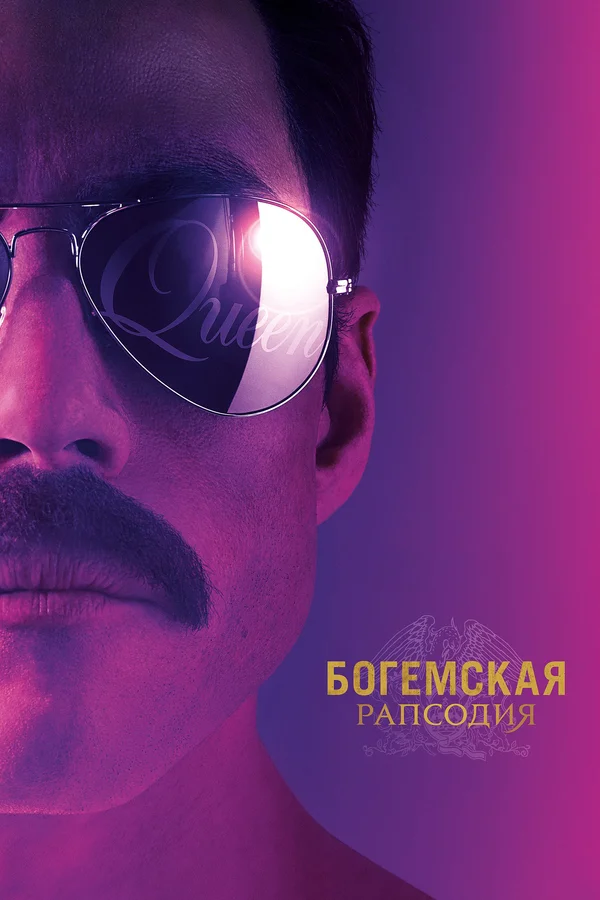
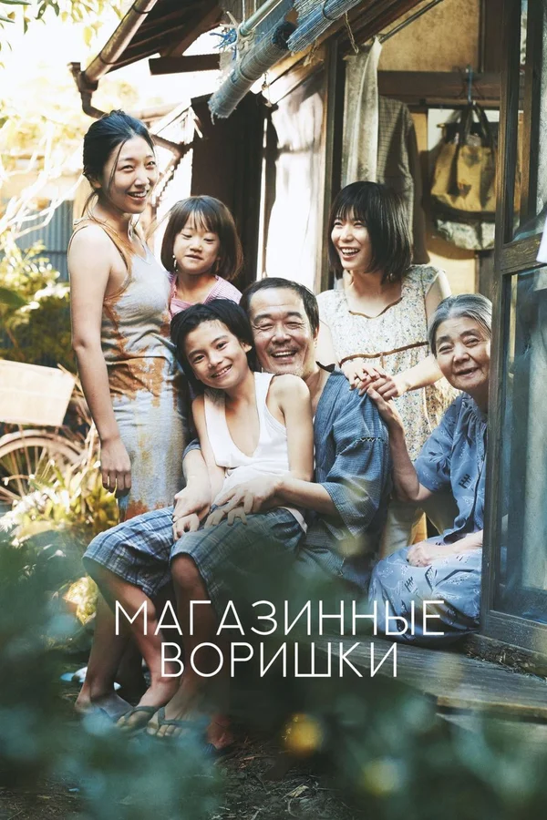
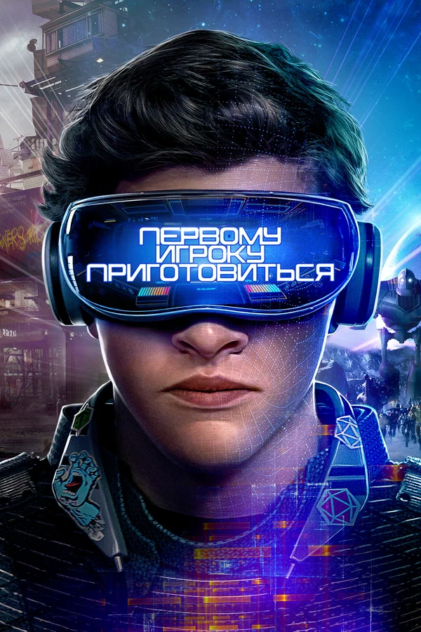
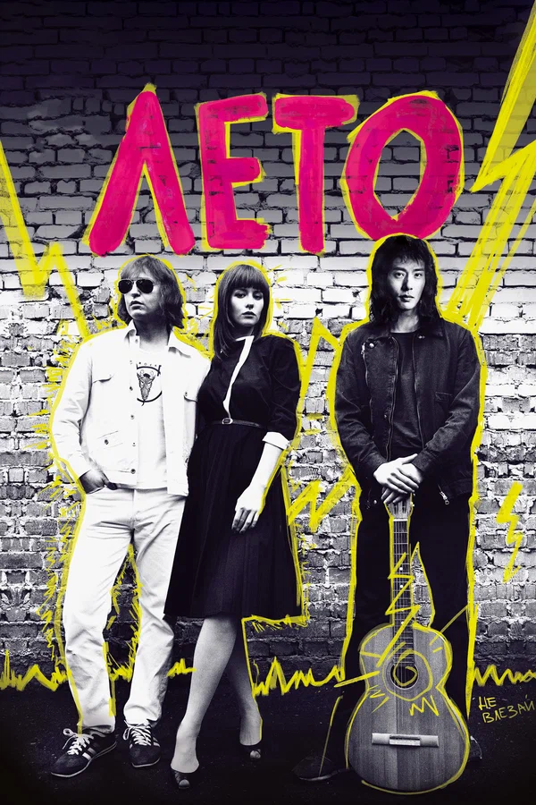
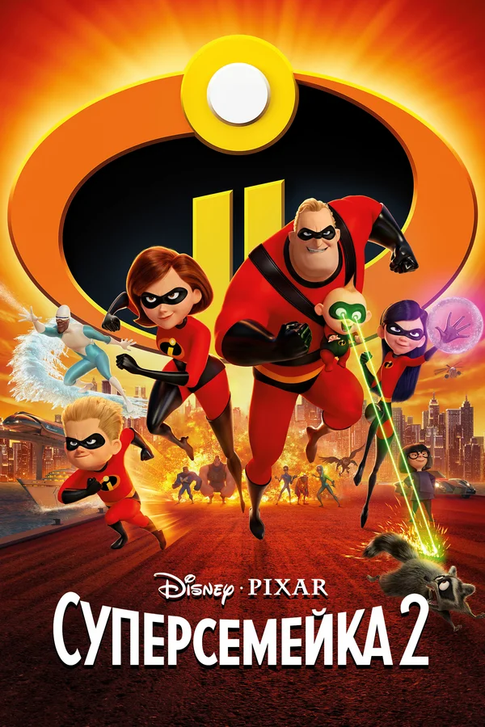
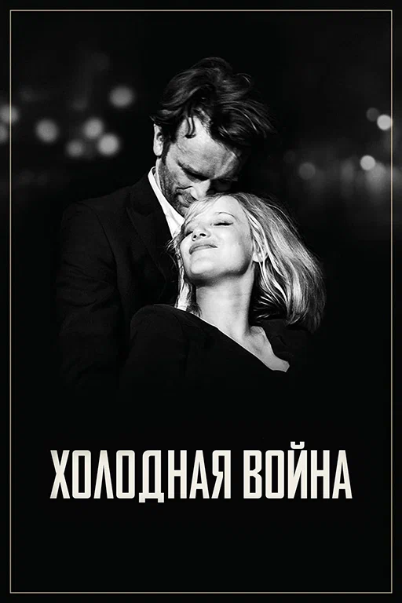

Топ - 10 фильмов 2018-го года
-
1. Зеленая книга
Оценка по версии кинопоиска: 8.4
1960-е годы. После закрытия нью-йоркского ночного клуба на ремонт вышибала Тони по прозвищу Болтун ищет подработку на пару месяцев. Как раз в это время Дон Ширли — утонченный светский лев, богатый и талантливый чернокожий музыкант, исполняющий классическую музыку — собирается в турне по южным штатам, где ещё сильны расистские убеждения и царит сегрегация. Он нанимает Тони в качестве водителя, телохранителя и человека, способного решать текущие проблемы. У этих двоих так мало общего, и эта поездка навсегда изменит жизнь обоих.
Смотреть трейлер -
2. Маккуин
Оценка по версии кинопоиска: 8.3
История художника, который выбрал точкой приложения своих творческих усилий подиум. Не имея специального образования и работая в ателье, ещё юношей Александр Маккуин поражал работодателя и клиентов своими способностями. Потом стажировка в Италии, наделавшая шума первая коллекция собственного бренда в Лондоне и внезапное приглашение на должность главного дизайнера Givenchy. Первые люди моды, семья, друзья и коллеги рассказывают об Александре Маккуине.
Смотреть трейлер -
3. Остров собак
Оценка по версии кинопоиска: 8.1
История 12-летнего мальчика Атари Кобаяси, опекаемого коррумпированным мэром Кобаяши. Когда по Указу последнего все домашние собаки города Мегасаки изгоняются на громадную свалку, Атари в одиночку отправляется на миниатюрном летательном аппарате на мусорный остров, чтобы найти своего верного пса по прозвищу Спотс. Там на острове вместе со стаей новых друзей-дворняг он начнет эпичное путешествие, которое решит будущую судьбу всей Префектуры.
Смотреть трейлер -
4. Человек-паук: Через вселенные
Оценка по версии кинопоиска: 8.2
Мы всё знаем о Питере Паркере. Он спас город, влюбился, а потом спасал город снова и снова… Но все это – в нашем измерении. А что если в результате работы гигантского коллайдера откроется окно из одного измерения в другое? Найдется ли в нем свой Человек-паук? И как он будет выглядеть? Приготовьтесь к тому, что в разных вселенных могут быть разные Люди-пауки и однажды им придется собраться вместе для борьбы с почти непобедимым врагом.
Смотреть трейлер -
5. Богемская рапсодия
Оценка по версии кинопоиска: 8.0
Чествование группы Queen, их музыки и их выдающегося вокалиста Фредди Меркьюри, который бросил вызов стереотипам и победил условности, чтобы стать одним из самых любимых артистов на планете. Фильм прослеживает головокружительный путь группы к успеху благодаря их культовым песням и революционному звуку, практически распад коллектива, поскольку образ жизни Меркьюри выходит из-под контроля, и их триумфальное воссоединение накануне концерта Live Aid, ставшим одним из величайших выступлений в истории рок-музыки.
Смотреть трейлер -
6. Магазинные воришки
Оценка по версии кинопоиска: 7.4
Небольшая семья бедного японского рабочего живет практически только на пенсию бабушки, поэтому некоторые из родственников иногда подворовывают в магазинах. Однажды, возвращаясь домой после очередной кражи, глава семейства утаскивает с балкона на первом этаже маленькую девочку, матери которой нет до неё никакого дела. Жена встречает находку нерадостно, но всё же принимает ребёнка. Скромное финансовое положение не мешает дружной семье жить счастливо, когда по телевизору они видят объявление о пропавшей девочке и решают не возвращать ребёнка законной матери.
Смотреть трейлер -
7. Первому игроку приготовиться
Оценка по версии кинопоиска: 7.5
Действие фильма происходит в 2045 году, мир погружается в хаос и находится на грани коллапса. Люди ищут спасения в игре OASIS – огромной вселенной виртуальной реальности. Ее создатель, гениальный и эксцентричный Джеймс Холлидэй, оставляет уникальное завещание. Все его колоссальное состояние получит игрок, первым обнаруживший цифровое «пасхальное яйцо», которое миллиардер спрятал где-то на просторах OASISа. Запущенный им квест охватывает весь мир. Совершенно негероический парень по имени Уэйд Уоттс решает принять участие в состязании, с головой бросаясь в головокружительную, искажающую реальность погоню за сокровищами по фантастической вселенной, полной загадок, открытий и опасностей.
Смотреть трейлер -
8. Лето
Оценка по версии кинопоиска: 7.4
Рассказ о начале творческого пути Виктора Цоя и группы «Кино», о его взаимоотношениях с Майком Науменко, его женой Натальей и многими, кто был в авангарде рок-движения Ленинграда 1981 года.
Смотреть трейлер -
9. Суперсемейка 2
Оценка по версии кинопоиска: 7.4
После событий первой части суперсемейка пользуется повышенным вниманием со стороны журналистов. Неожиданно оказалось, что обаятельная Миссис Исключительная гораздо лучше смотрится на экране телевизора, чем её муж. Мистеру Исключительному все чаще приходится сидеть дома и приглядывать за детьми, у каждого из которых есть свои причины быть недовольным собственными суперспособностями. Однако семейным проблемам предстоит отступить на второй план, когда окажется, что спокойствию Суперсемейки угрожает новый могущественный враг.
Смотреть трейлер -
10. Холодная война
Оценка по версии кинопоиска: 7.3
Это история невозможной любви в невозможное время. Они знакомятся на руинах послевоенной Польши. Разное происхождение и несхожие темпераменты – кажется, что они совершенно несовместимы. И все же им никуда друг от друга не деться. На протяжении лет они расстаются и встречаются вновь и вновь – в Берлине, Югославии и Париже… На пути их любви встают политика, превратности судьбы и их собственные недостатки, но ничто не в силах разорвать связь двух сердец.
Смотреть трейлер